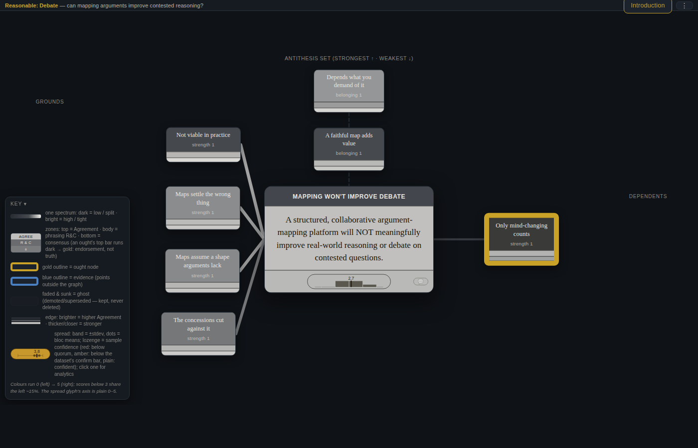

FLF · Lab Leaks, Black Holes & Eggs — Epistemic Case Study Competition
Wikipedia for arguments, not facts — a format, an engine, and an assessment methodology for building trustworthy knowledge from collective reasoning.
Language is linear because time is. Ideas are not — they branch, fork, and recombine. So a faithful map of reasoning needs at least two dimensions.
We advance fastest where reality slaps down errors: technology, mathematics, empirical science. But the questions people care about most — ethical, political, social — are often untestable: we cannot falsify our way to the answer. There, the honest best is not to declare a winner but to map the disagreement faithfully — every position's strongest form, its grounds and consequences, and exactly where reasonable people fork.
Reasonable breaks a disputed question into atomic claims — each small enough to examine on its own — placed on a 2-D graph and connected by a small set of typed relations. It then assesses them with blind, reputation-weighted rating, designed so the map's verdicts can approach truth without collapsing into a popularity vote. The claims themselves are ordinary natural-language sentences; only the relations between them are typed, so nuance lives in the text rather than in a restrictive schema. The aim is to raise the cultural floor for what counts as a reasonable argument — to make a weak belief as costly to hold in public as a checkable false fact became after Wikipedia. It is, in short, an attempt at infrastructure for collective sensemaking.
The competition invites a spec, a prototype tool, or a protocol. This is all three. Its center of gravity is the structure and assessment layers, but it reaches ingestion too: the AI build harnesses turn a raw source pack into an attributed graph today (claims extracted, provenance attached, duplicates merged), and the same open, append-only format is built to keep ingesting — a living graph any contributor, human or AI, adds to over time. Carried inside as evidence of rigor: a comparative methodology study and several critiques-with-counterexamples.
One stdlib-only Python interface (graph.py) over a layered
engine: an append-only event log → deterministic fold → frozen snapshot, with the full
assessment machinery — rater-bias correction, reputation, belief-camp detection, the
contested/ghost lifecycle — live in the running code. No installs, no servers, no network.
The data-model and assessment contracts are written down with every key
decision and tradeoff named — BUILD-SPEC, ASSESSMENT-SPEC, and the
Evidence/Argument/Ought grammar spec. A judge can tell why it is shaped this way.
The append-only graph format is interoperable: another team can pick up a graph, extend it, and rebuild it byte-for-byte. Nothing is deleted — refuted material is demoted to a retrievable "ghost," never erased.
One self-contained HTML file (no deps, CSP-safe) renders all four case graphs and teaches its own visual grammar with a 90-second built-in Introduction — a non-technical reader needs no legend.
v0/, each command below
is shown with the kind of output it prints:
# Which of two rival claims does the structure support better? # (covid n001 = natural zoonotic origin; n002 = research-related incident) python3 graph.py compare --a n001 --b n002 --data covid-graph-v2 => a (n001) is better grounded (margin 0.10) # after walking both back to shared premises # Is the built structure clean — no star-hubs, orphans, or malformed sets? python3 graph.py lint --data blackholes-graph-v2 hub_nodes: 0 orphan_nodes: 0 malformed_antithesis_sets: 0 # Rebuild the snapshot from the event log alone python3 graph.py rebuild --data blackholes-graph-v2 rebuilt graph.json from 3378 eventsThat rebuilt file is byte-for-byte identical to the committed one — the determinism test suite checks exactly this. 273 stdlib tests (including that suite) pass from a clean checkout (
python3 -m unittest discover -s reasonable -t .). The full command tour, and what
each verb shows, is in START-HERE.
Below is the actual viewer, embedded. Click Introduction (top bar) for a guided 90-second walkthrough of the Debate graph, then use Load Graph (⋯ menu) to switch between all four cases — the same machinery on a mundane question, a contested one, and a settled one.
The layout is not drawn — it is a deterministic force simulation whose lowest-energy state is engineered to also be the logically clearest one, so figures are reproducible and the map scales without hand-layout. If the embed doesn't load, open the viewer directly ↗.
The claims in these graphs are AI-generated prototype content that exercises the tool — not definitive arguments on their questions (see Honest limits).
The FLF prompt itself cites Scott Alexander's "Your Attempt To Solve Debate Will Not Work" — the essay whose thesis is that projects exactly like this one are doomed. So we built the Reasonable graph of that debate: the strongest version of Scott's case, the project's counter-position, and honest concessions (three of them citing our own retired findings), checked against Scott's actual post and rated by a blind panel.
Argument-mapping as a persuasion tool has a fifty-year record of not catching on, and much of Scott's critique lands. What is different now is narrow but real: AI makes the map cheap to build, the assessment layer is the part earlier mappers never shipped, and the map's job here is to be a shared record others can reason over — not to change anyone's mind by itself.

What the structure did is the interesting part:
Scott's deepest point is that values, not facts, generate the disagreement, and no map
resolves them. The grammar's answer is to give that value-generator an explicit place on
the board — located, distinguished from the factual substrate, and left honestly unresolved.
(Full report: v0/debate-graph/REPORT.md; assessed graph:
v0/debate-graph-v2/.)
The judges' stated bar is "meaningfully better than off-the-shelf deep research on the same sub-question." We ran that head-to-head on COVID origins. Both approaches got the same source material — the same 24 sources and 80 claims — so the only thing that differed was how the reasoning was represented: a flat written report versus the structured, assessed graph.
The flat pipeline went badly wrong in a way that was invisible on its own terms. Its verifier step, built to reject unsupported claims, ended up rejecting six central peer-reviewed findings that pointed one way and accepting contrarian preprints that pointed the other — quietly flipping the weight of the evidence. The graph didn't. It kept the well-supported findings well-supported, kept the genuinely open questions open, and made it visible which claims were carrying the conclusion.
The reason is structural, not political, and it transfers to any field. A yes/no "is this
claim supported?" filter is the right tool for catching junk, but the wrong tool for
weighing a contested question: it trips on any confident claim in a live debate, and a
single yes/no verdict throws away the distinction between a solid fact and the shakier inference
bundled with it. Once we saw the failure in the graph, we could fix it — a grading step that
separates "is this faithfully sourced?" from "how strong is it, 0–5?" — and we validated the
fix on a live run. In fairness: the baseline is a standard fan-out → verify → synthesize
deep-research recipe we built ourselves and left in the repo to inspect, not a third-party
product — so the comparison isolates the effect of representation, holding the sources fixed.
(Full comparison: v0/covid-graph/COMPARISON.md.)
The core question: in a collaborative map, how do you find the raters who track the truth and give their judgment its due weight — so the map's verdicts approach truth, work from a standing start with no established raters, scale up, survive genuinely contested questions, and resist coordinated manipulation? We tested many methods against each other and followed the evidence, including where it overturned our own earlier claims.
Two ideas recur throughout. Raters rate blind — they never see the current consensus, comments, or the author's reputation while rating. And a small set of anchors — questions whose answers are independently well-established — lets the system measure each rater against reality instead of against the crowd. Blind, asynchronous rating also removes the advantage the Rootclaim COVID debate was faulted for handing to whoever had memorized the most on the day: here the reasoning sits on the board to be weighed at leisure, not performed live.
Every method that failed, failed the same way: a rule that looks only inward can only measure agreement with the crowd, so it inherits whatever the crowd gets systematically wrong. The fix is blind rating plus a small, sparing dose of external anchors, with reputation weight spent only where it is actually needed.
Full synthesis with a reproduce index: v0/FINDINGS-SYNTHESIS.md;
the red-team + guardrail: v0/covid-adversarial/FINDINGS.md; the reliability result:
v0/v2-reliability/.
The same engine and the same blind-panel workflow ran across the competition's three deliberately-varied shapes, plus the meta debate — nothing tuned per case. The point is not the specific scores but that the structure behaved differently where the questions are genuinely different: decisive where the answer is settled, open where it isn't. Every graph here is built and rated from committed data and can be interrogated with the commands above (and the fuller set in START-HERE).
| Case (shape) | Top question | What the map showed |
|---|---|---|
| Eggs mundane-but-contested | Do eggs meaningfully raise health risk? | Separated the strong observation from the weaker causal claim drawn from it — the association survived, the leap to "so eggs cause harm" did not. |
| COVID curated debate | Natural origin, or a research-related incident? | Leaned one way but kept the other as a live minority, with the shared cruxes on the board — an open question shown as open. |
| Black holes confident answer | Is the collider safe, or catastrophic? | Landed decisively on safe — and the manufactured-certainty detector stayed quiet, because here the confidence is earned (settled, not performed). |
| Debate meta / value-laden | Does argument-mapping work? | Refused to pick a side; surfaced the reframing between the two positions as the strongest point of agreement. |
Same machinery, honestly different outcomes — which is what you want from a tool meant to report the state of a question rather than to manufacture a verdict.
A recurring result across every layer: the structured map mechanically surfaces defects that are invisible in the prose version of the same argument, and the project fixes them in the open.
supersede, with a public reason, nothing deleted.See v0/EVIDENCE-SOURCE-AUDIT.md and
v0/PROJECT-OVERVIEW.md §3.
These are three separate graphs only because we did not have time to build the single connected graph they belong to. Their topics already share deep underpinnings — biology, physics, mathematics — and the real target is one public graph of ~all knowledge, current and future.
Crucially, this need not stay a map of the already-known. A faithful map highlights its own holes, and can throw a target beyond the frontier: anyone could place a wanted node or neighborhood and put a bounty on developing it into high-confidence knowledge — much as this very competition does. Knowledge-building becomes a structured, incentivized, collaborative activity rather than a scatter of disconnected efforts.
The project has also opened a concrete near-term direction: running graphs with differing
contributor sets — human and AI, which doubles as a new benchmark for AI models at
direct knowledge-creation versus humans. The full concept (vision, mechanics,
institution-assessment, a non-adversarial revenue model, and a machine-checkable-mathematics
flagship) is in the Concept
Overview and v0/SITE-VARIANTS-CONCEPT.md.
On the arguments themselves. The claims populating these graphs are AI-generated under rapid prototyping — chosen to make the format function and show its potential, not to be mature, fully-developed, or the definitive last word on eggs, COVID origins, or LHC safety. What we are demonstrating is the structure-and-assessment machinery; a graph worth taking as a settled verdict would be built and rated by far more contributors, over far more time, than a prototype allows.
The engine, the four assessed case graphs, and the assessment research are built and reproducible. Stated plainly, three further things are not yet done:
Overall confidence that the assembled machinery is robust for a real deployment: ~60–65% — high on the tested mechanisms, lower on transfer to the messy real thing. We would rather state that honestly than round it up.
Curated pointers to the sharpest regions, for a reviewer — or an agent — short on time:
v0/debate-graph/REPORT.md:
the mapped, blind-assessed version of the essay FLF cites.v0/covid-graph/COMPARISON.md:
where the flat pipeline flipped the evidence and the graph didn't.v0/FINDINGS-SYNTHESIS.md
(with a reproduce index at the end); the red-team and the certainty detector in
v0/covid-adversarial/FINDINGS.md; the reliability result in
v0/v2-reliability/.